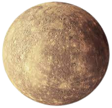
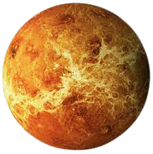

Gezegenler
Bir gezegen (veya seyyare), kendi yerçekimi sayesinde yuvarlak hâle gelecek kadar büyük olan ancak bir termonükleer füzyon başlatacak kadar büyük olmayan ve Uluslararası Astronomi Birliği'ne göre (tüm gezegen bilimcilere göre değil) komşu bölgesini gezegenimsilerden temizlemiş, bir yıldız veya yıldız kalıntısı yörüngesinde dönen astronomik cisimdir.
Merkür
Merkür, Güneş Sistemindeki en küçük gezegendir ve Güneş'e en yakın olanıdır. Güneş etrafındaki yörüngesi, Güneş'in tüm gezegenlerinin en kısası olan 87.97 Dünya günü sürer. Adını, Yunan tanrısı Hermes'e  (Ἑρμῆς) karşılık gelen Roma tanrısı Mercurius (Merkür), ticaret tanrısı, tanrıların habercisi ve tanrılar ile ölümlüler arasındaki arabulucudan almıştır. Venüs gibi, Merkür de daha düşük bir gezegen olarak Dünya'nın yörüngesinde Güneş'in etrafında döner ve Dünya'dan bakıldığında Güneş'ten görünen uzaklığı hiçbir zaman 28°'yi geçmez.
Venüs
Venüs, Güneş'ten ikinci gezegendir ve adını Roma aşk ve güzellik tanrıçasından almıştır. Ay'dan sonra Dünya'nın gece gökyüzündeki en parlak doğal nesnesi olan Venüs, gölge yapabilir ve güpegündüz çıplak gözle görülebilir.  Venüs'ün yörüngesi Dünya'nın yörüngesinden daha küçüktür, ancak maksimum uzaması 47°'dir; bu nedenle, gündüz-gece döngüsüne sahip enlemlerde, gün batımının başlamasını takiben veya gün doğumundan önce birkaç saate kadar en kolay şekilde görülebilir. Bazen, tamamen karanlık bir gökyüzünde görülmüştür. Venüs, her 224.7 Dünya gününde Güneş'in etrafında döner. Sinodik gün uzunluğu 117 Dünya günü ve yıldız dönüş süresi 243 Dünya günüdür.
Dünya
Dünya, Güneş'ten üçüncü gezegen ve yaşamı barındırdığı bilinen tek astronomik nesnedir. Güneş Sistemi'nde büyük hacimlerde su bulunabilirken, yalnızca Dünya sıvı yüzey suyunu besler. Dünya yüzeyinin yaklaşık %71'i okyanustan oluşur ve Dünya'nın kutuplarını gölgede bırakır. buz, göller ve nehirler. Dünya yüzeyinin geri kalan %29'u kıtalardan ve adalardan oluşan karadır. Dünyanın yüzey katmanı, yavaş hareket eden birkaç tektonik plakadan oluşur ve etkileşime girerek dağ sıraları, volkanlar ve depremler oluşturur.
Dünya yüzeyinin yaklaşık %71'i okyanustan oluşur ve Dünya'nın kutuplarını gölgede bırakır. buz, göller ve nehirler. Dünya yüzeyinin geri kalan %29'u kıtalardan ve adalardan oluşan karadır. Dünyanın yüzey katmanı, yavaş hareket eden birkaç tektonik plakadan oluşur ve etkileşime girerek dağ sıraları, volkanlar ve depremler oluşturur.
Mars
Mars, Güneş'ten dördüncü gezegen ve Güneş Sistemindeki en küçük ikinci gezegendir ve yalnızca Merkür'den daha büyüktür. İngilizce'de Mars, Roma savaş tanrısının adını taşır. Mars,  adlı ince bir atmosfere sahip karasal bir gezegendir ve esas olarak Yerkabuğuna benzer elementlerden oluşan bir kabuğa ve ayrıca demir ve nikelden oluşan bir çekirdeğe sahiptir. Mars, çarpma kraterleri, vadiler, kum tepeleri ve kutup buzulları gibi yüzey özelliklerine sahiptir. Ayrıca Phobos ve Deimos adlı iki küçük ve düzensiz şekilli uyduya sahiptir.
adlı ince bir atmosfere sahip karasal bir gezegendir ve esas olarak Yerkabuğuna benzer elementlerden oluşan bir kabuğa ve ayrıca demir ve nikelden oluşan bir çekirdeğe sahiptir. Mars, çarpma kraterleri, vadiler, kum tepeleri ve kutup buzulları gibi yüzey özelliklerine sahiptir. Ayrıca Phobos ve Deimos adlı iki küçük ve düzensiz şekilli uyduya sahiptir.
Jüpiter
Jüpiter, Güneş'ten beşinci gezegen ve Güneş Sistemindeki en büyüğüdür. Güneş Sistemindeki diğer tüm gezegenlerin toplam kütlesinin iki buçuk katından daha fazla, ancak Güneş'in kütlesinin binde birinden biraz daha az kütleye sahip bir gaz devidir.  Jüpiter, Ay ve Venüs'ten sonra Dünya'nın gece göğünde üçüncü en parlak doğal nesnedir ve tarih öncesi çağlardan beri gözlenmektedir. Adını tanrıların kralı olan Roma tanrısı Jüpiter'den almıştır.
Jüpiter, Ay ve Venüs'ten sonra Dünya'nın gece göğünde üçüncü en parlak doğal nesnedir ve tarih öncesi çağlardan beri gözlenmektedir. Adını tanrıların kralı olan Roma tanrısı Jüpiter'den almıştır.
Satürn
Satürn, Güneş'ten altıncı gezegen ve Jüpiter'den sonra Güneş Sistemi'ndeki en büyük ikinci gezegendir. Ortalama yarıçapı Dünya'nın yaklaşık dokuz buçuk katı olan bir gaz devidir. Dünya'nın ortalama yoğunluğunun yalnızca sekizde birine sahiptir; ancak  büyük hacmiyle Satürn 95 kat daha büyük
büyük hacmiyle Satürn 95 kat daha büyük
Uranüs
Uranüs, Güneş'ten yedinci gezegendir. Adı, Yunan mitolojisine göre Ares'in (Mars) büyük büyükbabası, Zeus'un (Jüpiter) büyükbabası ve Kronos'un (Satürn) babası olan Yunan gökyüzü tanrısı Uranüs'e bir göndermedir. Güneş Sistemindeki en büyük üçüncü gezegen yarıçapına ve dördüncü en büyük gezegen kütlesine sahiptir. Uranüs, bileşim olarak Neptün'e benzer ve her ikisinin de daha büyük gaz devleri Jüpiter ve Satürn'ünkinden farklı toplu kimyasal bileşimleri vardır. Bu nedenle bilim adamları, Uranüs ve Neptün'ü diğer dev gezegenlerden ayırmak için genellikle "buz devleri" olarak sınıflandırırlar.
Güneş Sistemindeki en büyük üçüncü gezegen yarıçapına ve dördüncü en büyük gezegen kütlesine sahiptir. Uranüs, bileşim olarak Neptün'e benzer ve her ikisinin de daha büyük gaz devleri Jüpiter ve Satürn'ünkinden farklı toplu kimyasal bileşimleri vardır. Bu nedenle bilim adamları, Uranüs ve Neptün'ü diğer dev gezegenlerden ayırmak için genellikle "buz devleri" olarak sınıflandırırlar.
Neptün
Neptün, Güneş'ten bilinen sekizinci ve en uzak Güneş gezegenidir. Güneş Sisteminde, çap olarak dördüncü en büyük gezegen, en büyük üçüncü gezegen ve en yoğun dev gezegendir. Dünya'nın kütlesinin 17 katı ve ikizine yakın Uranüs'ten biraz daha büyük.  Neptün, Uranüs'ten daha yoğun ve fiziksel olarak daha küçüktür çünkü daha büyük kütlesi, atmosferinin daha fazla yerçekimsel sıkışmasına neden olur. Güneş sisteminin iki buz devi gezegeninden biri olarak anılır (diğeri onun ikizine yakın Uranüs'tür).
Neptün, Uranüs'ten daha yoğun ve fiziksel olarak daha küçüktür çünkü daha büyük kütlesi, atmosferinin daha fazla yerçekimsel sıkışmasına neden olur. Güneş sisteminin iki buz devi gezegeninden biri olarak anılır (diğeri onun ikizine yakın Uranüs'tür).